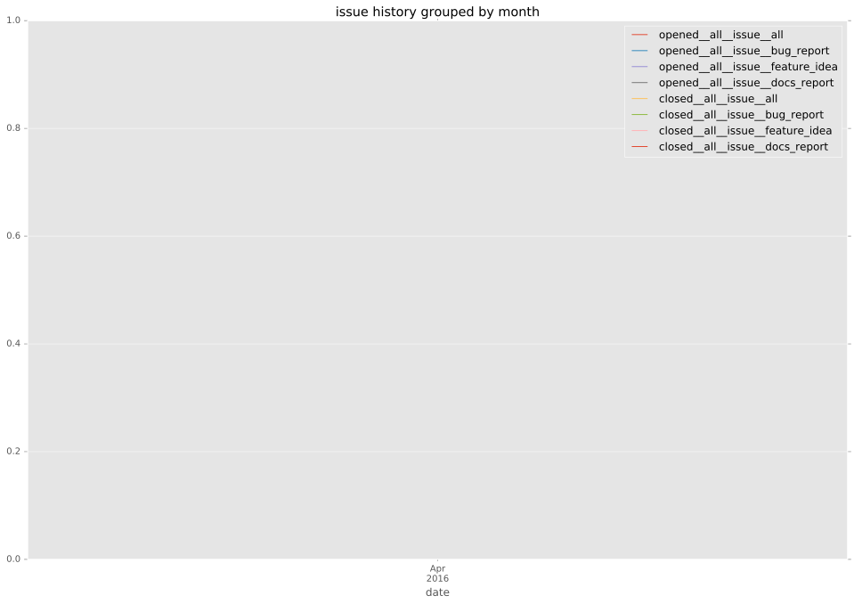
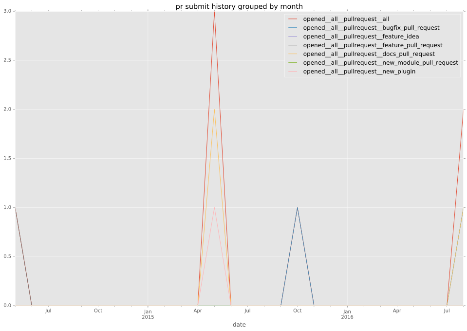

authors
- manuel-sousa
maintainers
- manuel-sousa
- chrishoffman
- romanek-adam
contributors
- manuel-sousa : 49 commits
- caduri : 4 commits
total issue counts
feature pull request: 2
pullrequest: 8
docs pull request: 3
bugfix pull request: 2
issue: 1
new plugin: 1
bug report: 1
issue history

pullrequest history

days open by issue type
bugfix pull request
count: 4
std: 11.5470053838
min: 1
max: 21
median: 11.0
mean: 11.0
all
count: 14
std: 43.0953453543
min: 0
max: 125
median: 1.0
mean: 21.8571428571
pullrequest
count: 0
std: nan
min: nan
max: nan
median: nan
mean: nan
docs pull request
count: 6
std: 0.0
min: 0
max: 0
median: 0.0
mean: 0.0
feature pull request
count: 1
std: nan
min: 125
max: 125
median: 125.0
mean: 125.0
issue
count: 0
std: nan
min: nan
max: nan
median: nan
mean: nan
new plugin
count: 2
std: 0.0
min: 9
max: 9
median: 9.0
mean: 9.0
bug report
count: 1
std: nan
min: 119
max: 119
median: 119.0
mean: 119.0
closures grouped by total days open